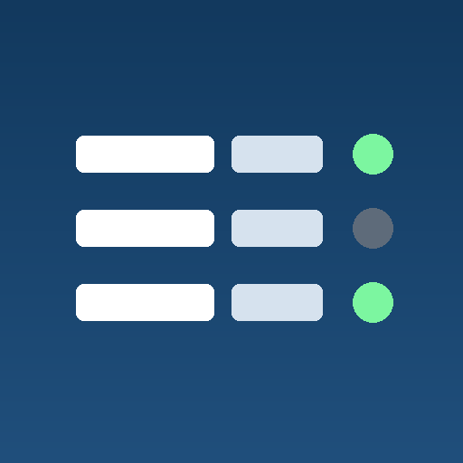
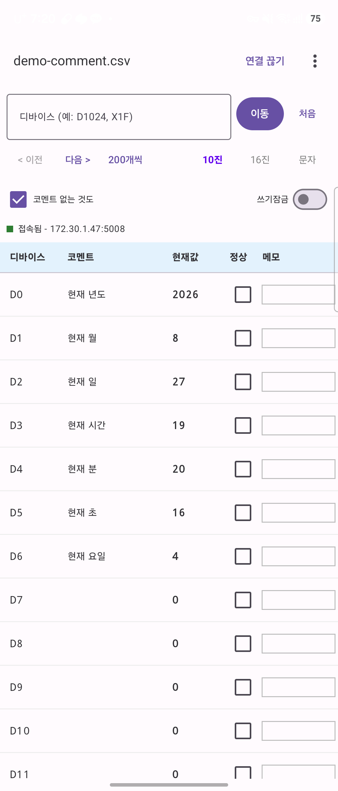
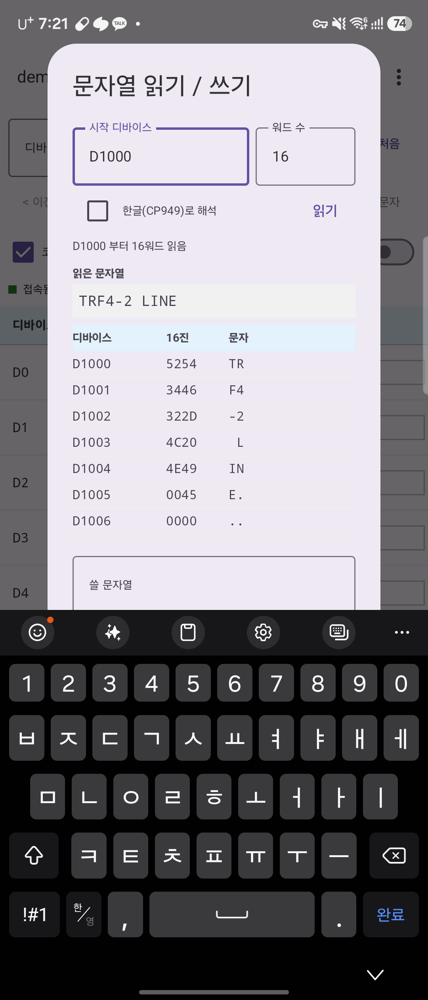
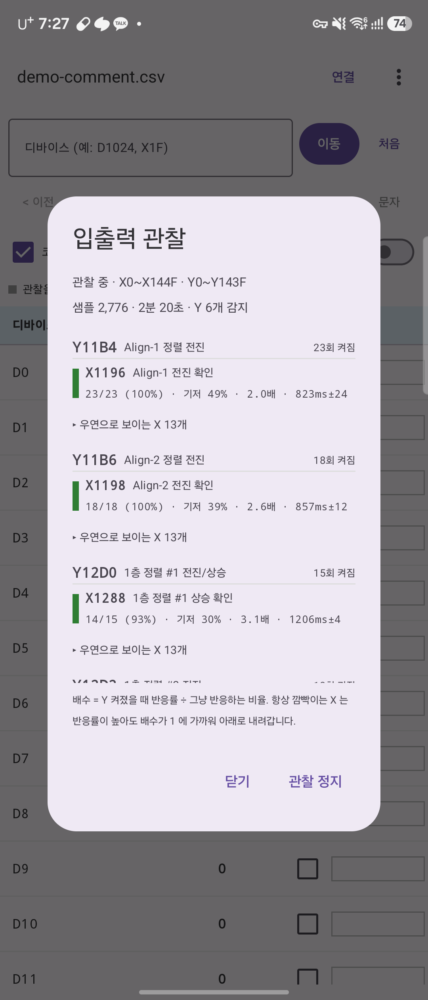

GX Works2 디바이스 코멘트를 폰에서 보고, 현장에서 PLC 값을 확인하는 도구
설비 앞에서 노트북을 펴지 않고도 디바이스 코멘트를 찾아보고, PLC 에 직접 접속해 실제 값을 확인하면서 점검 결과를 기록할 수 있습니다. 미쓰비시 MELSEC 계열의 MC 프로토콜 3E 로 통신합니다.
GX Works2 가 내보낸 디바이스 코멘트 CSV 를 변환 없이 엽니다. UTF-16 탭 구분과 UTF-8 을 모두 인식합니다.
IP 와 포트를 넣으면 접속해 현재값을 계속 갱신합니다. 10진·16진·문자로 바꿔 볼 수 있습니다.
디바이스명을 입력하면 그 자리로 바로 갑니다. 코멘트가 없는 번호도 조회됩니다.
행마다 정상 체크와 메모를 남기고, 디바이스·코멘트·현재값과 함께 CSV 로 뽑아 엑셀에서 정리합니다.
설비가 도는 것을 지켜보며 어느 출력에 어느 입력이 반응하는지 반응률·지연시간과 함께 정리해 줍니다.
IP 를 모를 때 같은 네트워크를 훑어 PLC 를 찾습니다. CPU 형명까지 확인해 다른 장비와 구분합니다.

코멘트와 실시간 값

워드에 담긴 문자열 읽기

입출력 관찰 결과
앱이 값을 읽으려면 PLC 이더넷 모듈에 MC 프로토콜 오픈 설정이 되어 있어야 합니다.
GX Works2 의 네트워크 파라미터 → 오픈 설정에서 한 채널을 TCP / MC 프로토콜 로 잡고
자국 포트 번호를 정한 뒤, 앱 설정에 같은 IP 와 포트를 넣으면 됩니다.
포트는 GX Works2 에서 16진수로 입력하는 화면이 많습니다. 앱에는 10진수로 넣어야 합니다.
이 앱에는 출력을 강제로 켜고 끄는 기능이 있습니다. Y 를 ON 하면 그 출력에 연결된 실린더·모터·밸브가 실제로 움직입니다. 그래서 기본은 잠겨 있고, 켤 때 경고 확인을 한 번 받습니다. 설비 안이나 가동 범위에 사람이 없는지 반드시 확인하고 사용하십시오.
이 앱은 개인정보를 수집하지 않습니다. 서버로 보내는 데이터가 없고 광고나 분석 도구도 넣지 않았습니다. 자세한 내용은 개인정보처리방침을 참고하십시오.